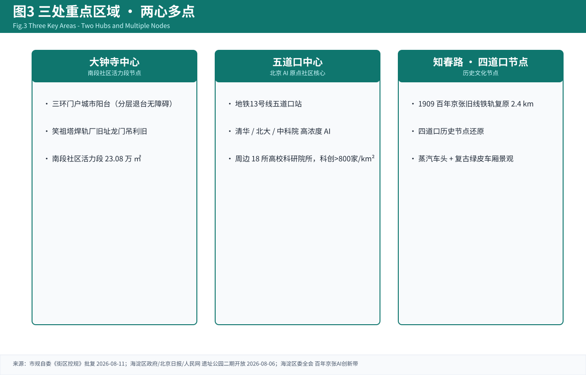
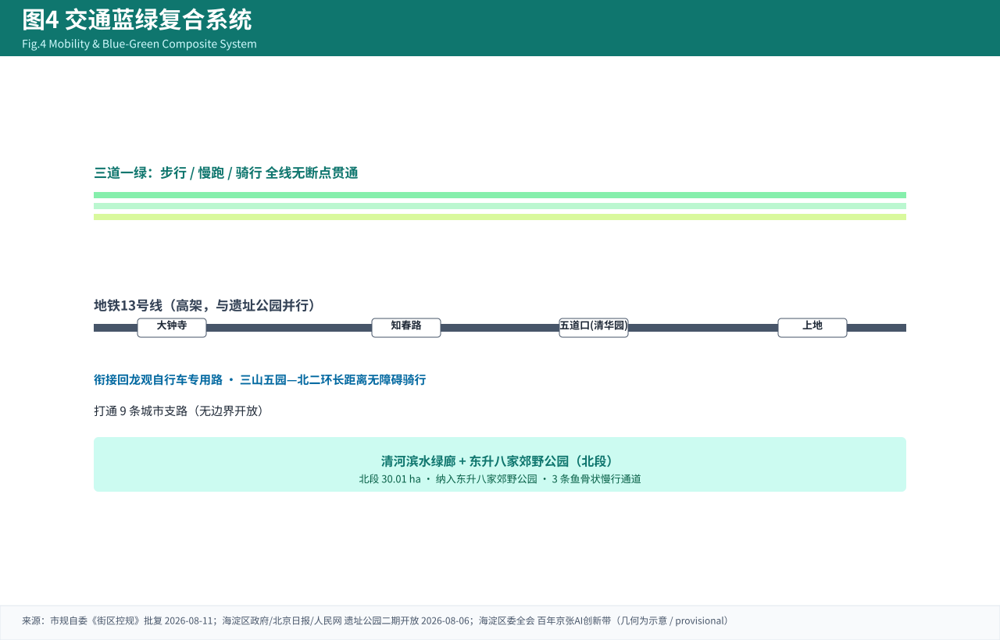

京张智脉 · JingZhang Synapse
百年京张AI创新带城市设计国际方案征集 — 开源智能体贡献包（A0 展板）。一脉串三区，两翼共协同。

图3 三处重点区域索引与设计任务

图4 交通慢行与蓝绿复合系统
⚠ 临时几何声明：全部图形为 provisional_constraint（official_boundary=false, boundary_precision=provisional_rough），仅作可视化，非官方红线/精确面积。官方面积以公告文本为准。规划控制指标缺失，比例为 provisional_assumption。导出 PDF：浏览器打开 → 打印 → 另存为 PDF（沙箱无 PDF 库）。license: COMMUNITY-DISPLAY-ONLY。